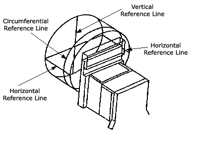
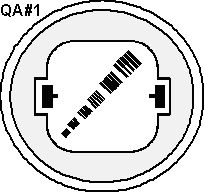
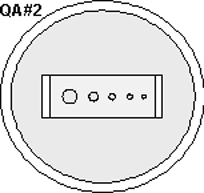
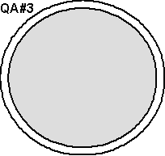

Operating Documentation
Direction 5112972-800, Rev# 2
CT Planned Maintenance Procedures
Operating Documentation |
| Required Persons | Preliminary Reqs | Procedure | Finalization |
|---|---|---|---|
| 1 | Timing Not Applicable | 55 mins | Timing Not Applicable |
Procedure Effectivity:
| Assembly: | SYSTEM |
| Subassembly: | Image Quality |
| Purpose: | Image Performance QA |
| Last Revised: | December 2003 |
| Item | Qty | Effectivity | Part# | Manufacturer | |
|---|---|---|---|---|---|
| QA Phantom | 1 | - | 46-241709G1 | - | |
| Poly phantom (48 cm) | 1 | - | 46-229361G2 | - | |
| Condition | Reference | Eff |
|---|---|---|
Perform the following: System High Voltage Checks, Tube/Detector Alignments. | - | - |
Scan the 48cm phantom and the three locations of the QA phantom, then use the [ROI] feature to measure certain parts in the images. Each location and the specification they test are presented here.
Use scan FOV for display FOV (Field of View) unless otherwise stated.
All reconstructions shall be 512x512 matrix size unless otherwise stated.
Scan all images with peristaltic on unless otherwise noted.
Any image series scan that does not meet specifications is a failure.
The person scanning the image series is responsible for reviewing the image to specifications listed on data sheets and means and standard deviations, and recording failures during image series.
Any failure on a particular technic will require at least a total of 10 slices to evaluate effectively. For means and standard deviations, 90% of the slices must pass.
Record means to 2 decimal places and round to the nearest tenth when comparing to specs.
Record standard deviations to 2 decimal places then truncate to 1 decimal place and apply the spec. For average standard deviations figure average using 2 decimal places then truncate.
Any failure on a particular technic will require at least a total of 10 slices to evaluate effectively. For means and standard deviations, 90% of the slices must pass.
When recording means and standard deviations, make sure to check image data sheets to verify if the means and standard deviations are to be averaged or recorded slice by slice.
Be sure to record all Image data required on the HHS data sheets when the image data is recorded.
Following are the definitions of some of the terms:
Mean CT number for the specified center coordinates of the phantom image.
Average Mean CT number for the center of the phantom image found by averaging the mean CT value for all of the specified center coordinates for the number of slices in an exam.
Mean CT number for the outside of the phantom image found by averaging the mean CT value for all of the specified outside coordinates of one slice.
Average outside mean CT number for the number of slices in an exam.
Average image noise about the center image coordinate (measured as the standard deviation) for the number of slices in an exam.
Averaging image noise (standard deviation) for the outside of a phantom, average over all outside coordinates for the number of slices in an exam.
Place large phantom in Gantry opening and align with laser lights.
Perform a 90 degree scout to verify phantom is not skewed. If phantom is skewed, correct by placing a spacer (penny or folded paper) between phantom and holder. Repeat until phantom is level.
In applications, set up a scan as follows:
| For HSA / HSA RP | Axial/0 location/4 scans/ 10 mm/120 kV/400 mA/4 sec. |
| For HSA VX | Axial/0 location/4 scans/ 10 mm/120 kV/300 mA/4 sec. |
Proceed to axial and select scan FOV as large.
When all the four scans have been acquired, transfer to the DISPLAY program.
Starting at Image 1, page through each image and observe the following:
Means and standard deviations CT numbers using a 45 x 45 pixels ROI box. Use Image Data Sheet provided.
Any artifacts. Refer to Image Data Sheet, 48cm/L for Artifact limits.
Table 1: Coordinates
| Center | 255, 255 |
| Outside | 255, 59 451, 255 |
| 255, 451 59, 255 |
Table 2: Specifications
| HSA/ HSA RP | AvXo - AvXc | +/- 8.5 |
| AvSDo | < 14.0 | |
| HSA VX | AvXo - AvXc | +/- 8.5 |
| < 16.2 |
If the means and standard deviations are out of specifications, or artifacts are present, schedule time to look into possible problems.
Table 3: IMAGE DATA SHEET (48cm/L)
| Exam #, # of Slice | AvXc | AvXo | AvXo - AvXc | AvSDo | Comments/Artifacts | Scan Tech Aprov |
| SPECS | --- | --- | +/-8.5 | <14.0 | --- | --- |
| 48cm/L/10mm/120KV/400mA/4sec (Do not this technique for Vx image series.) | ||||||
Table 4: IMAGE DATA SHEET (48cm/L)
| Exam #, # of Slice | AvXc | AvXo | AvXo - AvXc | AvSDo | Comments/Artifacts | Scan Tech Aprov |
| SPECS | --- | --- | +/-8.5 | <16.2 | --- | --- |
| 48cm/L/10mm/120KV/300mA/4sec (Use this technique for Vx image series.) | ||||||
| Box Size | 45 x 45 pixels |
| Coordinates: | |
| Center | 255, 255 |
| Outside | 255, 59 451, 255 255, 451 59, 255 |
Image Acceptance / Date:: ________
Image Reviewer: _______
Artifact Limits:
Rings 48/L 30/36cts Center Spot N/A Band 8.0 cts
42/L 15/18cts Clump 48/L 3.0 SIGMA Band radius 0-23.5cm
1mm N/A 42/L 2.2 SIGMA Streaks 4.0 cts
1mm N/A Smudge 48/L 6.8 cts
Center Artifact N/A 1mm 14.0 cts
42/L 6.1 cts
1mm 12.0 cts| NOTE: | For a printable version of the 48cm/L data sheet, click on the pdf icon below. |
Media File 1: Image Data Sheet 48cm/L

Place the QA phantom on the phantom holder and level it. Systems with non-metallic cradles will come with a phantom holder that has a perpendicular adjustment (Z-axis) knob on it. Each time you change phantoms, be sure to use a bubble level and the Z-axis knob on the phantom holder to level the phantom. All slices Peristaltic on unless otherwise noted.
Use the laser alignment lights to position the phantom.
Align the axial light to the circumferential line corresponding to the appropriate section to scan.
Align the coronal light to the horizontal lines on either side of the phantom.
Align the sagittal line (where it strikes the top of the phantom) to the vertical line on the face of the phantom.
Position the phantom and press internal landmark.
Illustration 1: Phantom Positioning and Landmarking

Scan phantom at the three different sections. Use Image Data Sheets for reference.
Table 5: QA#1/2/3 Series for HSA / HS RP
| Scan Phantom | FOV | KV | mA | Thickness | Scan Time | Slice | Comments |
| QA#1 | S | 120 | 170 | 10 | 2 | 4 | @0mm |
| QA#1 | S | 120 | 170 | 10 | 2 | 4 | Bone Retro, FOV=15cm |
| QA#1 | S | 120 | 340 | 10 | 1 | 4 | @0mm |
| QA#2 | S | 120 | 170 | 10 | 2 | 4 | @35mm Peristaltic off |
| QA#3 | S | 120 | 170 | 10 | 2 | 4 | @50 mm |
Table 6: QA#1/2/3 Series For Vx System
| Scan Phantom | FOV | KV | mA | Thickness | Scan Time | Slice | Comments |
| QA#1 | S | 120 | 170 | 10 | 2 | 4 | @0mm |
| QA#1 | S | 120 | 170 | 10 | 2 | 4 | Bone Retro, FOV=15cm |
| QA#2 | S | 120 | 170 | 10 | 2 | 4 | @35mm Peristaltic off |
Illustration 2: QA Phantom Section 1

| Section 1 |
| High Contrast Resolution (MTF) |
| Contrast Scale |
| Laser Accuracy |
| Location: 0 mm |
Illustration 3: QA Phantom Section 2

| Section 2 |
| Contrast Factor |
| Location: s35 mm |
Illustration 4: QA Phantom Section 3

| Section 3 |
| Means and STD DEV (Noise and Uniformity) |
| Location: s50 mm |
Position the QA phantom at the black reference line using the internal alignment lights. Verify that BOTH internal axial lasers line up on the black line on the QA phantom. If not, check table/gantry, cradle, and/or laser alignment. Use internal landmark.
Perform a series of axial scans starting at I5.0 and ending at S5.0 with 1.0mm spacing. Use the following parameters; 120KV/100mA/1.0mm/sm/2sec Bone detail.
Review the image series to locate the scan plane indication on the right side of the phantom (labeled L on the screen). The scan plane indication is the longer bar in the bar pattern (refer to illustration).
Using the image where the long bar appears darkest, record the scan location from the image annotation on the Image Data Sheet. This is the scan plane deviation which should be less than +/- 1.0mm.
| NOTE: | If necessary, adjust the internal alignment light position to meet this requirement. |
Repeat the above test using the external alignment light and pressing the external landmark.
Press ADV button to move phantom to landmark position. The scan plane indication must be within +/- 1.0mm.
Enter data on Image Data Sheets.
Illustration 5: QA Phantom Scan Plane Indication

IMAGE DATA SHEET
QA#1/S/10mm/120KV/170mA/2sec. Scan at 0 mm. Use this slice data for following Bone Retro.
Table 7: QA#1 MTF and CONTRAST SCALE
| Exam #, # of Slice | MTF | MTF 4 slice average | Contrast Scale | Comments | Scan Tech Aprov |
| SPECS | --- | 0.68 to 1.0 | 110.0 to 130.0 | --- | --- |
Box Size : 17 x 17 pixels
Image Acceptance Date:__________________
Image Reviewer: _________________
Illustration 6: QA Phantom ROI Placement

Standard deviation of ROI Box over F bar pattern in plexiglass.
Average standard deviation of plexiglass and water (i.e., image noise).
SDave= (SDB + SDC) / 2.
Contrast Scale = mean of B - mean of C
Modulation = (SDA2 - SDave2)1/2
MTF = 2.2 x (Modulation / Contrast Scale)
QA#1/S/10mm/120KV/170mA/2sec/ Bone Retro/ DISPLAY FOV=15cm. Scan at 0 mm.
Table 8: Line Pattern and Artifacts
| Exam #, # of Slice | Line Patterns Visible | Artifacts | Comments | Scan Tech Aprov |
| SPECS | B,C,D,E,F | --- | --- | --- |
Image Acceptance Date:__________________
Image Reviewer: _________________
| NOTE: | For a printable version of the QA#1 data sheets, click on the pdf icons below. |
Media File 2: QA#1 - MTF and Contrast Scale

QA#1/S/10mm/120KV/340mA/1sec. DO NOT use this technique for Vx image series. Scan at 0 mm.
Table 9: QA#1 MTF and CONTRAST SCALE
| Exam #, # of Slice | MTF | MTF 4 slice average | Contrast Scale | Comments | Scan Tech Aprov |
| SPECS | --- | 0.68 to 1.0 | 110.0 to 130.0 | --- | --- |
Box Size : 17 x 17 pixels
Image Acceptance Date:__________________
Image Reviewer: _________________
Illustration 7: QA#1 MTF and CONTRAST SCALE

Standard deviation of ROI Box over F bar pattern in plexiglass.
Average standard deviation of plexiglass and water (i.e., image noise), SDave = (SDB + SDC) / 2.
Contrast Scale = mean of B - mean of C
Modulation = (SDA2 - SDave2)1/2
MTF = 2.2 x (Modulation / Contrast Scale)
| NOTE: | For a printable version of the QA#1 data sheets (contd.), click on the pdf icons below. |
Media File 3: QA#1 (cont.)

IMAGE DATA SHEET - QA Phantom
QA#2/S/10mm/120KV/170mA/2 sec. Scan at 35mm. PERISTALTIC OFF.
Table 10: QA#2 CONTRAST FACTOR
| Exam #, # of Slice | Visible Holes (View at window of 20) | Contrast factor | Comments/Artifacts | Scan Tech Aprov |
| SPECS | See below | 4.0 to 12.0 | --- | --- |
| Contrast Factor | Lower limit number of visible holes * | Upper limit number of visible holes* | Smallest visible hole size |
| 4.00 to 7.99 | 3 | 5 | 5mm |
| 8.00 to 12.00 | 4 | 5 | 3mm |
* Number of holes required to be visible, depending on contrast factor. Two out of four slices taken must meet specs.
Image Acceptance Date:__________________
Image Reviewer: _________________
Illustration 8: Contrast Factor Slice

| NOTE: | For a printable version of the QA#2 data sheet, click on the pdf icon below. |
Media File 4: QA#2 - Contrast Factor

IMAGE DATA SHEET - QA Phantom #3
QA#3/S/10mm/120KV/170mA/2 sec. Scan at 50mm. PERISTALTIC OFF.
Table 11: QA#3 MEANS and STANDARD DEVIATION (51 x 51 pixels)
| Exam #, # of Slice | Mean | Std Dev | Average Std Dev Average of 4 slices | Comments/ Artifacts | Scan Tech Aprov |
| SPECS | 0.0 +/- 1.5 | --- | See below* | --- | --- |
Box Size : 51 x 51 pixels
* If tube has < 5000 scans, spec is 3.00 to 3.60.
* If tube has > 5000 scans, spec is 3.00 to 3.80.
Image Acceptance Date:__________________
Image Reviewer: _________________
QA#3/S/10mm/120KV/170mA/2 sec. Do not scan, evaluate images from previous step.
Table 12: QA#3 MEANS and STANDARD DEVIATION (31 x 31 pixels)
| Exam #, # of Slice | AvXc | AvXo | AvXo - AvXc | Comments/Artifacts | Scan Tech Aprov | |
| SPECS | --- | --- | --- | --- | --- | --- |
| Box Size | 31 x 31 pixels |
| Coordinates: | |
| Center | 255, 255 |
| Outside | 255, 94 416, 255 255, 416 94, 255 |
Image Acceptance Date:__________________
Image Reviewer: _________________
Artifact Limits: Rings 4.0/4.8 cts Center Spot N/A Band 2.8 cts Clump N/A Streaks 4.0 cts Band radius 0-8.5 cm Smudge 2.2 cts Center Artifact 3.5 Std Dev 1 mm 4.0 cts
Image Acceptance Date:__________________
Image Reviewer: _________________
| NOTE: | For a printable version of the QA#3 data sheet, click on the pdf icon below. |
Media File 5: QA#3 - Means and Standard Deviation

No finalization required.